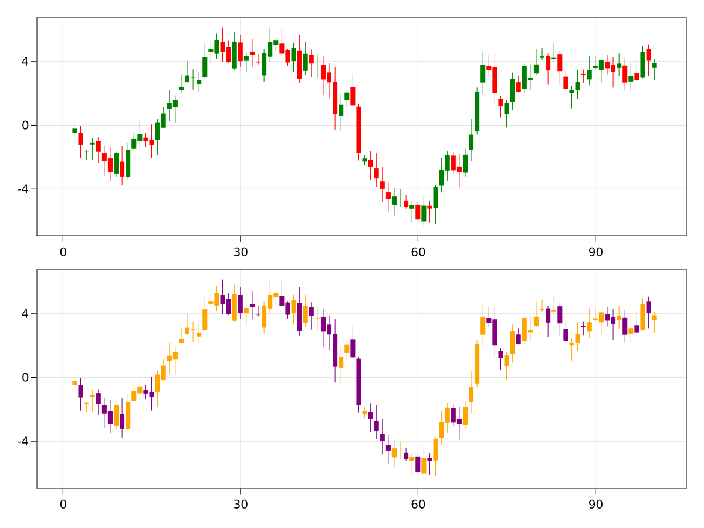

Plot Recipes
Recipes allow you to extend Makie with your own custom types and plotting commands.
There are two types of recipes:
- Type recipes define a simple mapping from a user defined type to an existing plot type
- Full recipes define new custom plotting functions.
Type recipes
Type recipes are mostly just conversions from one type or set of input argument types, yet unknown to Makie, to another which Makie can handle already.
convert_arguments must always return a Tuple.
Plotting of a Circle for example can be defined via a conversion into a vector of points:
AbstractPlotting.convert_arguments(x::Circle) = (decompose(Point2f, x),)You can restrict conversion to a subset of plot types, like only for scatter plots:
AbstractPlotting.convert_arguments(P::Type{<:Scatter}, x::MyType) = convert_arguments(P, rand(10, 10))There are also conversion traits, which make it easier to define behavior for a group of plot types that share the same trait. PointBased for example applies to Scatter, Lines, etc.
AbstractPlotting.convert_arguments(P::PointBased, x::MyType) = ...Lastly, it is also possible to convert multiple arguments together.
AbstractPlotting.convert_arguments(P::Type{<:Scatter}, x::MyType, y::MyOtherType) = ...Optionally you may define the default plot type so that plot(x::MyType) will use it directly:
plottype(::MyType) = SurfaceFull recipes with the @recipe macro
A full recipe comes in two parts. First is the plot type name, for example MyPlot, and then arguments and theme definition which are defined using the @recipe macro.
Second is at least one custom plot! method for MyPlot which creates an actual visualization using other existing plotting functions.
We use an example to show how this works:
@recipe(MyPlot, x, y, z) do scene
Theme(
plot_color => :red
)
endThis macro expands to several things. Firstly a type definition:
const MyPlot{ArgTypes} = Combined{myplot, ArgTypes}The type parameter of Combined contains the function myplot instead of e.g. a symbol MyPlot. This way the mapping from MyPlot to myplot is safer and simpler. The following signatures are automatically defined to make MyPlot nice to use:
myplot(args...; kw_args...) = ...
myplot!(args...; kw_args...) = ...A specialization of argument_names is emitted if you have an argument list (x,y,z) provided to the recipe macro:
`argument_names(::Type{<: MyPlot}) = (:x, :y, :z)`This is optional but it will allow the use of plot_object[:x] to fetch the first argument from the call plot_object = myplot(rand(10), rand(10), rand(10)), for example.
Alternatively you can always fetch the ith argument using plot_object[i], and if you leave out the (x,y,z), the default version of argument_names will provide plot_object[:arg1] etc.
The theme given in the body of the @recipe invocation is inserted into a specialization of default_theme which inserts the theme into any scene that plots Myplot:
function default_theme(scene, ::Myplot)
Theme(
plot_color => :red
)
endAs the second part of defining MyPlot, you should implement the actual plotting of the MyPlot object by specializing plot!:
function plot!(myplot::MyPlot)
# normal plotting code, building on any previously defined recipes
# or atomic plotting operations, and adding to the combined `myplot`:
lines!(myplot, rand(10), color = myplot[:plot_color])
plot!(myplot, myplot[:x], myplot[:y])
myplot
endIt's possible to add specializations here, depending on the argument types supplied to myplot. For example, to specialize the behavior of myplot(a) when a is a 3D array of floating point numbers:
const MyVolume = MyPlot{Tuple{<:AbstractArray{<: AbstractFloat, 3}}}
argument_names(::Type{<: MyVolume}) = (:volume,) # again, optional
function plot!(plot::MyVolume)
# plot a volume with a colormap going from fully transparent to plot_color
volume!(plot, plot[:volume], colormap = :transparent => plot[:plot_color])
plot
endExample: Stock Chart
Let's say we want to visualize stock values with the classic open / close and low / high combinations. In this example, we will create a special type to hold this information, and a recipe that can plot this type.
First, we make a struct to hold the stock's values for a given day:
using CairoMakie
struct StockValue{T<:Real}
open::T
close::T
high::T
low::T
endNow we create a new plot type called StockChart. The do scene closure is just a function that returns our default attributes, in this case they color stocks going down red, and stocks going up green.
@recipe(StockChart) do scene
Attributes(
downcolor = :red,
upcolor = :green,
)
endThen we get to the meat of the recipe, which is actually creating a plot method. We need to overload a specific method of AbstractPlotting.plot! which as its argument has a subtype of our new StockChart plot type. The type parameter of that type is a Tuple describing the argument types for which this method should work.
Note that the input arguments we receive inside the plot! method, which we can extract by indexing into the StockChart, are automatically converted to Observables by Makie.
This means that we must construct our plotting function in a dynamic way so that it will update itself whenever the input observables change. This can be a bit trickier than recipes you might now from other plotting packages which produce mostly static plots.
function AbstractPlotting.plot!(
sc::StockChart{<:Tuple{AbstractVector{<:Real}, AbstractVector{<:StockValue}}})
# our first argument is an observable of parametric type AbstractVector{<:Real}
times = sc[1]
# our second argument is an observable of parametric type AbstractVector{<:StockValue}}
stockvalues = sc[2]
# we predefine a couple of observables for the linesegments
# and barplots we need to draw
# this is necessary because in Makie we want every recipe to be interactively updateable
# and therefore need to connect the observable machinery to do so
linesegs = Node(Point2f0[])
bar_froms = Node(Float32[])
bar_tos = Node(Float32[])
colors = Node(Bool[])
# this helper function will update our observables
# whenever `times` or `stockvalues` change
function update_plot(times, stockvalues)
colors[]
# clear the vectors inside the observables
empty!(linesegs[])
empty!(bar_froms[])
empty!(bar_tos[])
empty!(colors[])
# then refill them with our updated values
for (t, s) in zip(times, stockvalues)
push!(linesegs[], Point2f0(t, s.low))
push!(linesegs[], Point2f0(t, s.high))
push!(bar_froms[], s.open)
push!(bar_tos[], s.close)
end
append!(colors[], [x.close > x.open for x in stockvalues])
colors[] = colors[]
end
# connect `update_plot` so that it is called whenver `times`
# or `stockvalues` change
AbstractPlotting.Observables.onany(update_plot, times, stockvalues)
# then call it once manually with the first `times` and `stockvalues`
# contents so we prepopulate all observables with correct values
update_plot(times[], stockvalues[])
# for the colors we just use a vector of booleans or 0s and 1s, which are
# colored according to a 2-element colormap
# we build this colormap out of our `downcolor` and `upcolor`
# we give the observable `typ = Any` so it will not error when we change
# a color from a symbol like :red to a different type like RGBf0(1, 0, 1)
colormap = lift(sc.downcolor, sc.upcolor, typ = Any) do dc, uc
[dc, uc]
end
# in the last step we plot into our `sc` StockChart object, which means
# that our new plot is just made out of two simpler recipes layered on
# top of each other
linesegments!(sc, linesegs, color = colors, colormap = colormap)
barplot!(sc, times, bar_froms, fillto = bar_tos, color = colors, strokewidth = 0, colormap = colormap)
# lastly we return the new StockChart
sc
endFinally, let's try it out and plot some stocks:
timestamps = 1:100
# we create some fake stock values in a way that looks pleasing later
startvalue = StockValue(0.0, 0.0, 0.0, 0.0)
stockvalues = foldl(timestamps[2:end], init = [startvalue]) do values, t
open = last(values).close + 0.3 * randn()
close = open + randn()
high = max(open, close) + rand()
low = min(open, close) - rand()
push!(values, StockValue(
open, close, high, low
))
end
# now we can use our new recipe
f = Figure(resolution = (1200, 900))
stockchart(f[1, 1], timestamps, stockvalues)
# and let's try one where we change our default attributes
stockchart(f[2, 1], timestamps, stockvalues,
downcolor = :purple, upcolor = :orange)
f
As a last example, lets pretend our stock data is coming in dynamically, and we want to create an animation out of it. This is easy if we use observables as input arguments which we then update frame by frame:
timestamps = Node(collect(1:100))
stocknode = Node(stockvalues)
fig, ax, sc = stockchart(timestamps, stocknode)
record(fig, "stockchart_animation.mp4", 101:200, framerate = 30) do t
# push a new timestamp without triggering the observable
push!(timestamps[], t)
# push a new StockValue without triggering the observable
old = last(stocknode[])
open = old.close + 0.3 * randn()
close = open + randn()
high = max(open, close) + rand()
low = min(open, close) - rand()
new = StockValue(open, close, high, low)
push!(stocknode[], new)
# now both timestamps and stocknode are synchronized
# again and we can trigger one of them by assigning it to itself
# to update the whole stockcharts plot for the new frame
stocknode[] = stocknode[]
# let's also update the axis limits because the plot will grow
# to the right
autolimits!(ax)
end